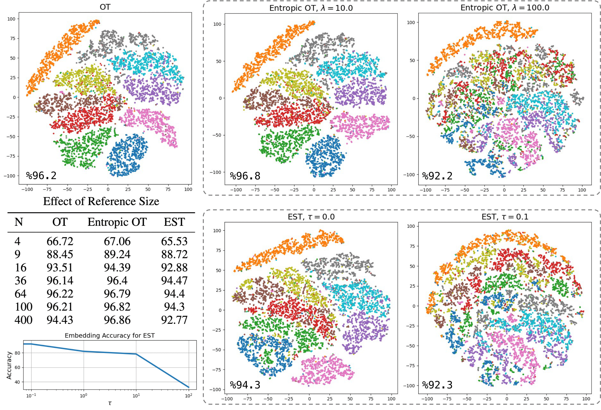

The optimal transport (OT) problem has gained significant traction in modern machine learning for its ability to: (1) provide versatile metrics, such as Wasserstein distances and their variants, and (2) determine optimal couplings between probability measures. To reduce the computational complexity of OT solvers, methods like entropic regularization and sliced optimal transport have been proposed. The sliced OT framework improves efficiency by comparing one-dimensional projections (slices) of high-dimensional distributions. However, despite their computational efficiency, sliced-Wasserstein approaches lack a transportation plan between the input measures, limiting their use in scenarios requiring explicit coupling. In this paper, we address two key questions: Can a transportation plan be constructed between two probability measures using the sliced transport framework? If so, can this plan be used to define a metric between the measures? We propose a "lifting" operation to extend one-dimensional optimal transport plans back to the original space of the measures. By computing the expectation of these lifted plans, we derive a new transportation plan, termed expected sliced transport (EST) plans. We further prove that using the EST plan to weight the sum of the individual Euclidean costs $|x-y|^p$ for moving from $x$ to $y$ results in a valid metric between the input discrete probability measures. Finally, we demonstrate the connection between our approach and the recently proposed min-SWGG [1], along with illustrative numerical examples that support our theoretical findings.
Given discrete probability measures $\mu^1,\mu^2\in \mathcal{P}_p(\mathbb R^d)$,
Figure: Depiction of transport plans (an optimal transport plan, a plan obtained from solving an entropically regularized transport problem, and the proposed expected sliced transport plan) between source (orange) and target (blue) for four different configurations of masses. The measures in the left and right panels are concentrated on the same particles, respectively; however, the top row depicts measures with uniform mass, while the bottom row depicts measures with random, non-uniform mass. transport plans are shown as gray assignments and as $n\times m$ heat matrices encoding the amount of mass transported (dark color = no transportation, bright color = more transportation), where $n$ is the number of particles on which the source measure is concentrated, and $m=2n$ is the number of particles on which the target measure is concentrated.
Figure: Wall-clock time plot of Sinkhorn algorithm for entropic OT [2] with varying regularizaition parameters and the EST method for different numbers of slices, $L$, as the size $N$ of the empirical measures increases.
Given $\mu^1,\mu^2$ discrete probability measures, we perform the new expected sliced transportation scheme by using the following averaging measure $\sigma_\tau\ll \mathcal{U}(\mathbb{S}^{d-1})$ on the sphere: \[d\sigma_\tau(\theta)= \frac{e^{-\tau \mathcal{D}^p_p(\mu^1,\mu^2;\theta)}}{\int_{\mathbb S^{d-1}} e^{-\tau \mathcal{D}_p^p(\mu^1,\mu^2;\theta') }d\theta'}d\theta,\]where $\mathcal{D}_p(\mu^1,\mu^2;\theta):=\left(\sum_{x\in \mathbb{R}^d}\sum_{y\in\mathbb{R}^d}\|x-y\|^p\gamma_\theta^{\mu^1,\mu^2}(\{x,y\})\right)^{1/p}$, and $\tau \geq 0$ is a hyperparameter we will refer to as the temperature.
Note that $\sigma_\tau$ provides a general parametric framework that interpolates between our proposed scheme with the uniform measure ($\tau = 0$) and min-SWGG [1], as the EST distance approaches min-SWGG when $\tau \to \infty$.
Figure: Interpolation between two point clouds via $((1-t)x+ty)_\# \gamma$, where $\gamma$ is the optimal transport plan (top left), the transport plan obtained from entropic OT with various regularization parameters (bottom left), and the EST for different temperatures $\tau$ (right).
Following the linear optimal transportation (LOT) framework, also referred to as the Wasserstein or transport-based embedding framework [3], we investigate the application of our proposed transport plan in point cloud classification. Let $\mu_0=\sum_{i=1}^N \alpha_i\delta_{x_i}$ denote a reference probability measure and let $\mu_k = \sum_{j=1}^{N_k} \beta^k_j \delta_{y^k_j}$ denote a target probability measure. Let $\gamma^{\mu_0,\mu_k}$ be a transport plan between $\mu_0$ and $\mu_k$, and define the barycentric projection of this plan as: \[ b_i(\gamma^{\mu_0,\mu_k}):= \frac{1}{\alpha_i}\sum_{j=1}^{N_k} \gamma^{\mu_0,\mu_k}_{ij}y^k_j, \qquad i\in{1,...,N}. \] Note that $b_i(\gamma^{\mu_0,\mu_k})$ represents the center of mass to which $x_i$ from the reference measure is transported according to the transport plan $\gamma^{\mu_0,\mu_k}$. When $\gamma^{\mu_0,\mu_k}$ is the OT plan, the LOT framework of [3] uses \[ [\phi(\mu_k)]_i := b_i(\gamma^{\mu_0,\mu_k})-x_i, \qquad i\in{1,...,N} \] as an embedding $\phi$ for the measure $\mu_k$. This framework, as demonstrated in [4], can be used to define a permutation-invariant embedding for sets of features and, more broadly, point clouds. More precisely, given a point cloud $\mathcal{Y}_k=\{(\beta_j^k,y^k_j)\}_{j=1}^{N_k}$, where $\sum_{j=1}^{N_k}\beta_j^k=1$ and $\beta_j$ represent the mass at location $y_j$, we represent this point cloud as a discrete measure $\mu_k$.
Figure: t-SNE visualization of the embeddings computed using different transport plans (of the Point Cloud MNIST 2D dataset), along with the corresponding logistic regression accuracy for each embedding. The t-SNE plots are generated for embeddings with a reference size of $N=100$, and for EST, we used $L=128$ slices. The table shows the accuracy of the embeddings as a function of reference size $N$. For the table, the regularization parameter for entropic OT is set to $\lambda=10$, and for EST, the temperature is set to $\tau=0$ with $L=128$ slices. Lastly, the plot on the bottom left shows the performance of EST, when $N=100$ and $L=128$, as a function of the temperature parameter, $\tau$.
[1] Mahey, Guillaume, Laetitia Chapel, Gilles Gasso, Clément Bonet, and Nicolas Courty. "Fast optimal transport through sliced generalized wasserstein geodesics." Advances in Neural Information Processing Systems 36 (2023): 35350-35385.
[2] Cuturi, Marco. "Sinkhorn distances: Lightspeed computation of optimal transport." Advances in neural information processing systems 26 (2013).
[3] Wang, Wei, Dejan Slepčev, Saurav Basu, John A. Ozolek, and Gustavo K. Rohde. "A linear optimal transportation framework for quantifying and visualizing variations in sets of images." International journal of computer vision 101 (2013): 254-269.
[4] Kolouri, Soheil, Navid Naderializadeh, Gustavo K. Rohde, and Heiko Hoffmann. "Wasserstein Embedding for Graph Learning." In International Conference on Learning Representations. (2020)